NodeBox 2015 Warsaw Workshop
25 - 29 May 2015.
These are the results of a one-week workshop on data visualization and generative design held in Polish-Japanese Academy of Information Technology. All visualizations are created in NodeBox Live. You can see progress and sketches on the workshop blog.
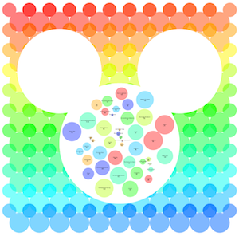
Disney Profit Percentages
Marta Dziedzic
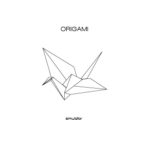
ORIGAMI simulator
Anna Chrzanowska
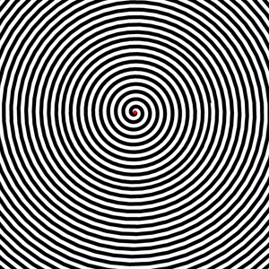
Optical Illusions
Katarzyna Mazek & Aleksandra Lekszycka
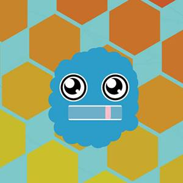
Gum-chewing awesomely badass creature....
Bartek Staszczak
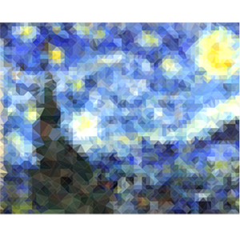
Triangulated picture
Aleksandra Walentynowicz
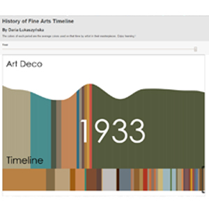
History of Fine Arts Timeline
Daria Łukaszyńska
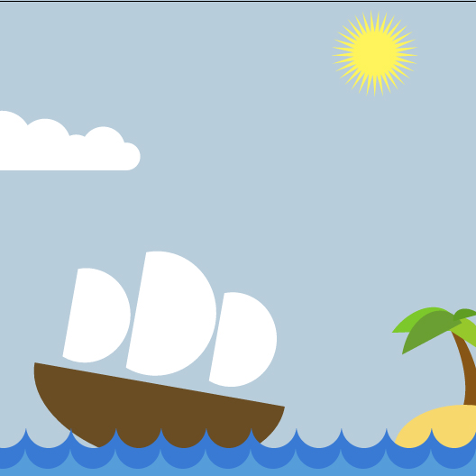
Boat animation
Aleksandra Czarnojan
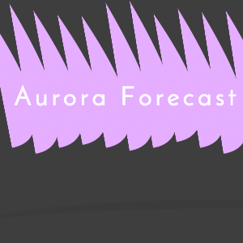
Aurora forecast for Scandinavia
Anastasia Buialo
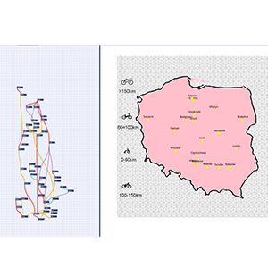
Distances of bike trails in Polish cities
Michal Mierzejewski & Jakub Wilczak
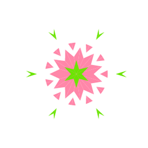
Synesthesia
Elizabeth Pismak
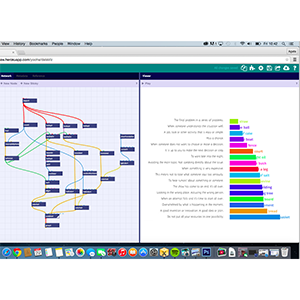
English Idioms
Agata Juszkiewicz
All work is copyrighted by their respective owners. NodeBox Live is a product of the Experimental Media Research Group.